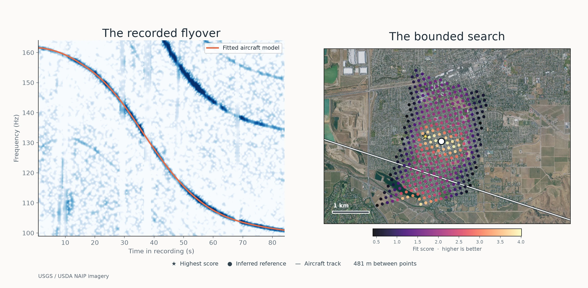
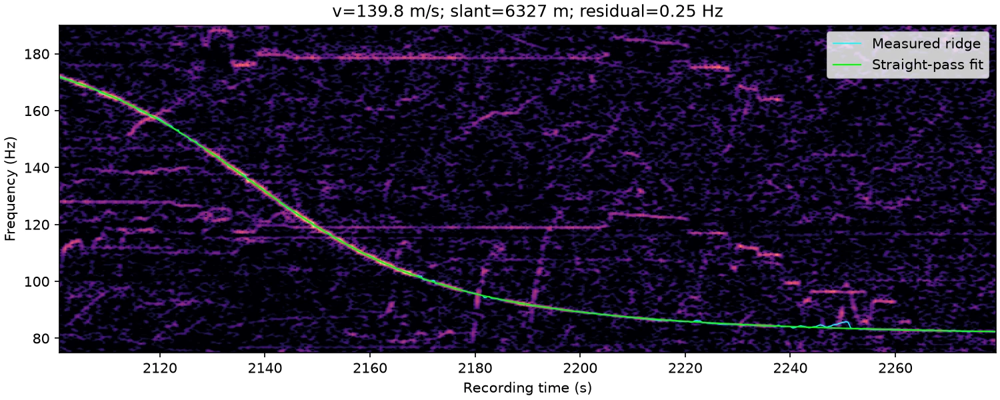
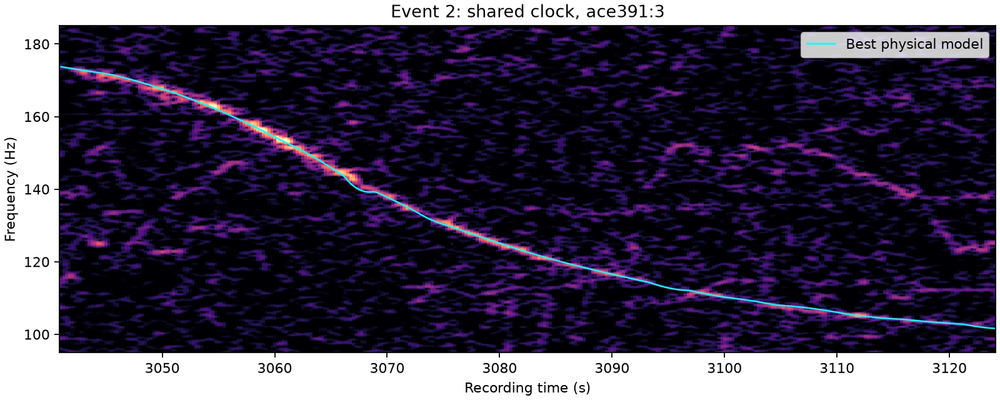
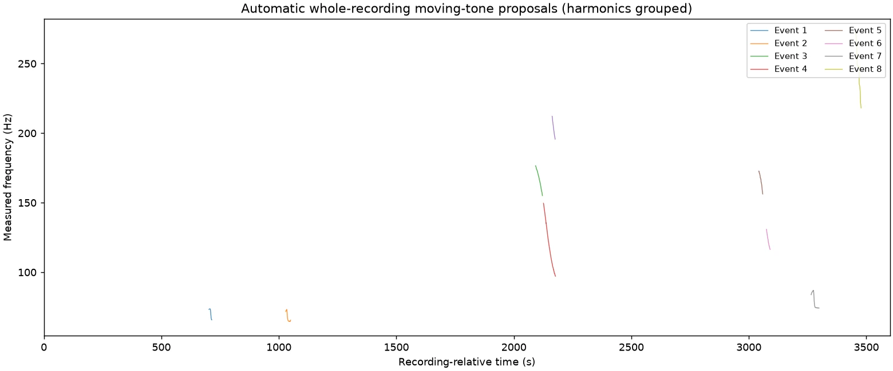
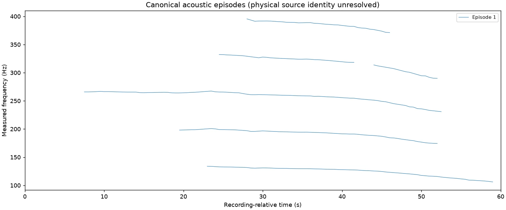

Two flyovers, one recorder
43.86 mWith source-informed events and geographic bounds, the leading point fell this far from an approximate public reference. The model left the result inconclusive.
Read the field reportAn aircraft heard by a phone in California. Forty recordings scanned for moving tones. Five field recordings with uncertain clocks. Each experiment tests a different part of the idea.
The automatic upload took the whole MP3, a city-area search boundary and an approximately ten-second start window. It received no flight ID, frequency band or hand-picked event. This historical run searched all aircraft types. Current searches use confirmed non-jets.

Of 466 nearby aircraft, the search associated the recorded passage with a track and ranked 105 candidate locations. The top point lay 476 m from a reference inferred from other flight tracks. Some trajectories exceeded the model’s limits, so the run returned an inconclusive decision. Experiment and ranking

The experiments range from guided replays to automatic discovery. Independent blind accuracy on real recordings remains an open measurement.
With source-informed events and geographic bounds, the leading point fell this far from an approximate public reference. The model left the result inconclusive.
Read the field reportThe full-recording detector proposed acoustic groups in 36 files. Each group is a lead for flight matching. Aircraft identities and microphone locations require separate evidence.
Read the field reportThree searches returned rankings, all outside 1 km of the reported sites. Two returned no candidate. The precise microphone positions and recording clocks were unconfirmed.
Read the field reportMeasured flight trajectories offered a check on the workflow. Detection varied across the recordings and the evaluations yielded no validated automatic location.
Read the field reportRead left to right for time and bottom to top for frequency. A bright band follows energy in a narrow range of pitches. Compare its bend with the model laid over the recording.



A propeller can produce several harmonics that bend together. Grouping those lines keeps one noisy flyover from counting as several independent sightings.


Each point marks a possible microphone position. Color shows how well the model fits the evidence there. The star marks the highest score. Similar scores at distant points leave the location ambiguous.

If you use or write about DOPPLERGEIST, please credit Cinna Davis and cite these field notes. For a specific experiment, please link to the field notes and include the version or commit used.
Please also cite itsdavis.com. If author profiles would help readers, you’re welcome to link to Cinna Davis on GitHub and X (Twitter).